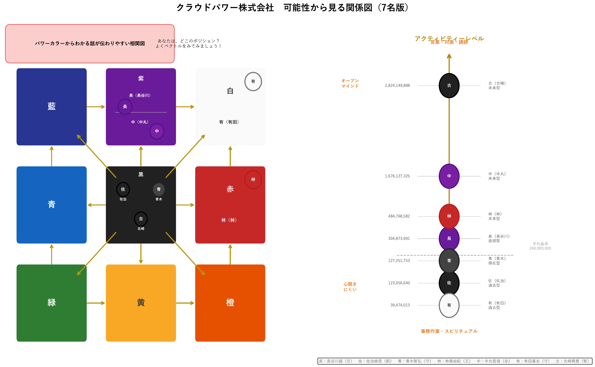

02参考資料
① 組織の人員の関係図
ライフプロファイリングをもとに、7名の関係性・思考の傾向・適した役割を可視化したものです。日々のコミュニケーションや役割分担の参考にご活用ください。



個人プロファイリング（要約）
ライフプロファイリングから見た7名の特性と、最も力を発揮できる役割の一覧です。日々の関わり方・役割分担の参考にご活用ください。
| No. | 氏名 | 力を発揮できる役割 | パワー カラー | 深層 心理 | ナイン パーソナル | 思考タイプ |
|---|---|---|---|---|---|---|
| 01 | 長谷川 誠さん | 経営判断・ビジョン提示役 | 紫 | 宙 | 空 | 34（フィーリング寄り） |
| 02 | 佐治 麻里さん | 実務管理・品質保証役 | 黒 | 純 | 創 | 44（両方） |
| 03 | 青木 智弘さん | 現場維持・安定運営役 | 黒 | 海 | 守 | 26（フィーリング） |
| 04 | 林 美由紀さん | リーダーシップ・育成役 | 赤 | 陽 | 王 | 64（両方） |
| 05 | 中丸 哲哉さん | 未来志向・プランニング役 | 紫 | 純 | 全 | 88（ロジカル） |
| 06 | 有田 基志さん | 情報収集・サポート役 | 白 | 旅 | 守 | 81（ロジカル） |
| 07 | 古崎 晴貴さん | 突破力・問題解決役 | 黒 | 炎 | 智 | 98（ロジカル） |
※ 本表は概要です。各人の詳しいプロファイルは別添「個人のプロファイリング」（個人別ファイル）をご参照ください。 個人情報（生年月日・出生地等）を含むため、閲覧・保管の範囲を限定してお取り扱いください。
② 会議まとめ（社員全体会議 議事録）
| 開催日 | 2026年6月26日 |
|---|---|
| テーマ | オンライン保健室の活用状況確認・今後の方針 |
① 保健室が使われなかった主な理由
- 「困ったときは自分で解決する」が多数派
- 「専門家に相談する」習慣がそもそもない（病院・弁護士レベルの問題でないと相談しないイメージ）
- 外部の人に「一から百まで説明する」のが煩わしいと感じる
- 話した内容が外部パートナー経由で社長に伝わるのではという不安があった時期があった
（外部パートナー本人への不信感ではなく、情報の流れへの懸念）
② 各社員の現状
- セッション未実施の社員：信頼関係がある人にしか相談しない。今後面談予定
- 複数の社員に共通：相談する習慣がなく外部への説明コストを重く感じる。悩みはゼロではないが行動に至らなかった
- 参加メンバー共通：健康面はおおむね良好。病院で対応できるレベルの認識
③ 社内の変化（前向きな成果）
- 対人・対外関係の悩みが社内で共有・解決できるようになってきた
- 定期社内共有会で細かい気づきや課題を話し合う文化が育っている
- 社内で問題解決できる力がついてきた、という実感がある
④ 今後の方針（会議内での合意）
- 保健室の継続・変更・終了は社内担当者と相談して決める
- ストレスチェックの義務化対応は社労士と相談して進める
③ 健康診断管理について
健康診断の管理体制についてのご案内です（総務ご担当者様向け）。
1. 法令上、会社に対する義務
■ 労働安全衛生法
| 義務 | 内容 |
|---|---|
| 健康診断の実施 | 常時使用する労働者に対し、年1回の定期健康診断を実施すること |
| 健康診断結果の管理 | 健康診断個人票を作成し、5年間保存すること |
| 異常所見者の把握 | 医師が異常所見ありと判断した社員を把握し、必要に応じて受診勧奨等を行うこと |
| 医師への意見聴取 | 必要に応じて医師の意見を確認すること |
補足：健康診断対象者について
健康診断の対象者は、健康保険組合から案内がくるのは組合の対象者のみ（入社時に過去の健康診断を把握し、年1回のサイクルでの実施が必要）。
| 区分 | 対象 |
|---|---|
| 健保組合の健診 | 健保組合の制度対象者 |
| 労働安全衛生法の健診 | 常時使用する労働者 |
39歳以下の社員についても会社として定期健康診断の対象。なお、実施方法や費用負担については、加入されている健康保険組合の制度をご確認いただくことをお勧めします。
■ 管理時に配慮する法律
- 個人情報保護法：健康診断結果は「要配慮個人情報」に該当します。そのため、閲覧者を限定する・保管場所を限定するなどの管理が必要。
- 労働契約法（安全配慮義務）：健康診断結果から健康上の課題が確認された場合には、必要に応じて業務内容や負荷等への配慮を検討することが求められます。
2. 管理について
総務担当者または社長等が以下を管理することが必要です。
- 年1回の健康診断受診案内
- 健康診断結果の収集および保管
- 異常所見者の把握および記録
- 必要に応じた受診勧奨
- 中途入社者の健康診断結果の確認
3. 一般的な管理方法（例）
在籍社員
- 毎年同じ時期（例：4月）に健康診断受診を案内
- 受診後、結果（PDFまたはコピー）を提出
- 社長および管理担当者のみ閲覧できる場所で保管
- 異常所見の有無を確認
- 必要に応じて受診勧奨
中途入社者
- 入社時に直近1年以内の健康診断結果を提出
- 1年を超えている場合は入社後速やかに健康診断を受診
4. 企業のオンライン保健室で対応可能な内容
健康診断結果をご提供いただける場合は、次のサポートが可能です。
- 管理表作成
- 異常所見者の抽出サポート
- 健康診断管理体制構築に関する助言
④ アンケート結果まとめ
実施：2026年6月 ｜ 回答数：5件（全員回答・無記名） ｜ 集計母数：回答者数5名に対する割合（複数回答は合計100%を超えます）
全体所見
- 表面上の状態は安定：元気に働いている60%。ただし40%が疲れを自覚している。
- 身体面の潜在的な疲れ：睡眠・疲労感・ストレスが同率40%。自覚症状の薄い層も存在。
- 相談文化が薄い：自分で解決80%・専門家0%。保健室がまだ使われていない。
- 保健室への期待はある：健康相談・ストレス相談が各60%。ニーズ自体は存在する。
- 要確認事項：Q3「仕事の進め方」60%の背景（効率化・習得・不満）の確認が必要。
Q1 現在の状態に最も近いもの（単一選択）
「疲れが続いている／余裕がない」は0%。表面上は安定。
Q2 現在、気になっていること（複数回答）
睡眠・疲労・ストレスが同率40%。身体と精神の両面に潜在的な疲れ。
Q3 今後、変えていきたいこと（複数回答）
「仕事の進め方」60%トップ。背景（効率化・やり方習得・環境不満）は要確認。
Q4 困った時に相談する相手（複数回答）
「自分で解決」80%・「専門家」0%。保健室がまだ相談の場として認識されていない。
Q5 会社にあったら嬉しいサポート（複数回答）
「仕事の整理」と「特に必要ない」が同率40%。押しつけにならない関わり方が重要。
Q6 オンライン保健室に今後期待すること（複数回答）
健康・ストレス相談への期待が各60%。「よく分からない」20%→保健室の役割説明が途上。
Q7 自由記述（会社をより働きやすくするために）
「社長の意見が絶対になってしまうため、社長のいない会話の場を設ける必要があると考えている」（回答1名／他4名は無回答）
総括
利用されない主な理由：「何をするところか分からない」「一人で解決が当たり前」の2点。
今後の方針
- ① 保健室の役割・できることを全員に伝え直す
- ② 「ちょっと話したい」が言いやすい入口をつくる